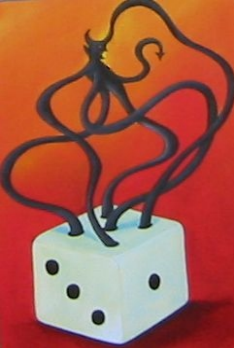
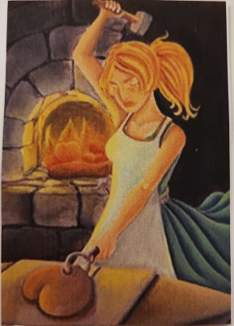

Sari Halonen
Peliohjelmoinnin opiskelija Kotkasta
HearthBound
Raportti kevään 2023 Xamk Game Jamin aikana tehdystä pelistä
Jamin teema
Jamin teemaksi arvottiin kaksi korttia ja peliin oli tarkoitus sisällyttää jotain molemmista korteista.
1. kortti
2. kortti
Tekniset jutut
| Pelimoottori | Unity 2020.3.26f1 |
|---|---|
| Alusta | PC |
Grafiikkatyyli
Yhdistelmä 2D-pikseligraiikkaa ja 3D-grafiikkaa.
Pelin idea
Pelin ideana on toteuttaa "tilauksia" joissa määritellään kunkin ominaisuuden määrä. Tilaukset on satunnaisesti generoituja ja osa niistä on vaikeampia ja osa taas helpompia. Pelaajan tulee noppia heittämällä yrittää saada ominaisuuksien pisteet mahdollisimman lähelle tilauksessa määriteltyä ja saa tästä pisteitä sen mukaan miten lähelle pyydettyjä pisteitä pelaaja pääsee.
Noppia voi heittää niin monta kuin haluaa kunhan niitä vain riittää pöydällä ja jokaisen tilauksen jälkeen pelaaja voi valita uusia noppia niin, että niitä on jälleen yhteensä kuusi. Peli jatkuu käytännössä ikuisesti eikä peliin ole rakennettu mitään erityistä voittoehtoa.
Projektin eteneminen ja oma osuuteni
Kuten muisstakin jameissa, projekti aloitettiin suunnittelemalla koko tiimin voimin millainen peli halutaan toteuttaa ja miten teemaa halutaan hyödyntää. Pelin idea jäi hieman huteraksi ja huolellisemmalla suunnittelulla olisi ehkä päästy selkeämpään ideaan. Yksi tiimin jäsenistä halusi harjoitella pikseliarttia joten grafiikkatyyliin haluttiin tämän takia sisällyttää pikselikuvia. Koko peli olisi periaatteessa voinut olla pikseligrafiikkaa mutta pelissä olevista nopista haluttiin hieman interaktiivisempia kuin mitä 2D-nopista lyhyessä ajassa pystyisi tekemään joten ne päädytttiin tekemään 3D-malleina ja kameraan laitettiin pikselifiltteri.
Tiimissä oli toisinsanoen yksi jäsen joka teki pelkästään pikselitaidetta suunnitteluun osallistumisen lisäksi ja kaksi muuta jäsentä työskenteli Unityn kanssa. Itse tein jonkin verran hommia koodin kanssa, hieman taidepuolen juttuja kuten noppien 3D-malli ja UI-assetteja mutta eniten aikaa kului Unityn editorin puolella. Asettelin pelinäkymää ja yhdistelin 2D ja 3D-assetteja niin, että ne näkyvät kamerassa nätisti. 3D ja 2D-näkymien yhdistely osoittautui yllättävän vaikeaksi mutta lopulta peli saatiin näyttämään ihan kivalta. Efektien tasoa säädin myös melko pitkään, noppien haluttiin näyttävän pikselisiltä mutta silmäluvuista piti kuitenkin saada helposti selvää. Ääniefektien tekemistä itse harkittiin mutta päädyin kuitenkin etsimään ilmaiseksi saatavilla olevat ääniefektit, joiden tekijät on merkattu pelin credits-osioon.